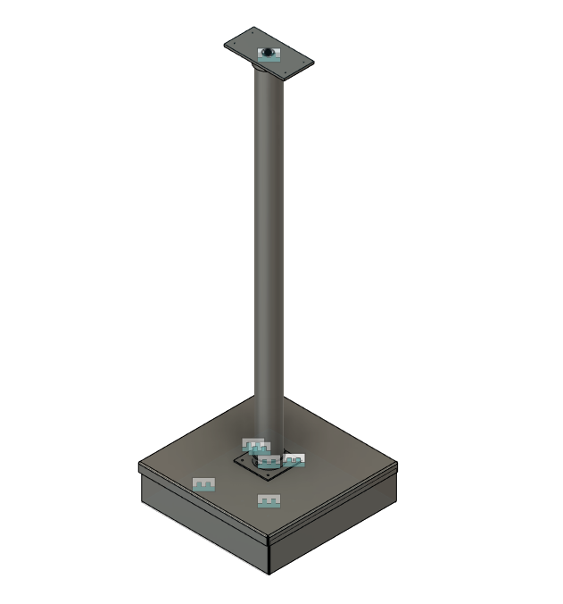

| To The Stars To The Stars is a game jam game created in 1 week that documents the saving of a species of bug from planet XE-13-2-2. This was a solo project where I created all code, all music, and all art assets. |
 |
|---|---|
| ERROR 404: the Game
ERROR 404: the Game was my first ever released game. I made this game for the 46th Ludum Dare during the compo. I created all code, music, and art assets for this project. |
 |
| Project: LETAR
Project LETAR is a part of my open source roboticop initiative. For this project I am attempting to develop robots that help both law enforcement officials and members of the community to form a system that rewards safer policing. Currently, I serve as the main designer and programmer of this project. |
 |
| Break the Cycle
Break the Cycle was my second released game. I made this game for the 47th Ludum Dare during the compo. For this game I only had about 12 hours to fully develop the game, but during that time I created all of the game's code, music, and art assets. |
 |